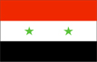
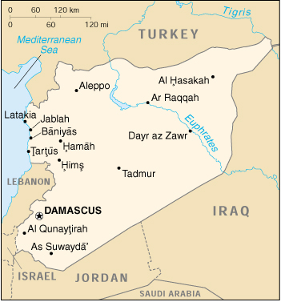

{kind=link}


| Syria |  |
|
|  | |
| Introduction |
Background: Following the breakup of the Ottoman Empire during World War I, Syria was administered by the French until independence in 1946. In the 1967 Arab-Israeli War, Syria lost the Golan Heights to Israel. Since 1976, Syrian troops have been stationed in Lebanon, ostensibly in a peacekeeping capacity. Talks with Israel over the return of the Golan Heights have recently been revived.
| Geography |
Location: Middle East, bordering the Mediterranean Sea, between Lebanon and Turkey
Geographic coordinates: 35 00 N, 38 00 E
Map references: Middle East
Area:
total:
185,180 sq km
land:
184,050 sq km
water:
1,130 sq km
note:
includes 1,295 sq km of Israeli-occupied territory
Area - comparative: slightly larger than North Dakota
Land boundaries:
total:
2,253 km
border countries:
Iraq 605 km, Israel 76 km, Jordan 375 km, Lebanon 375 km, Turkey 822 km
Coastline: 193 km
Maritime claims:
contiguous zone:
41 nm
territorial sea:
35 nm
Climate: mostly desert; hot, dry, sunny summers (June to August) and mild, rainy winters (December to February) along coast; cold weather with snow or sleet periodically hitting Damascus
Terrain: primarily semiarid and desert plateau; narrow coastal plain; mountains in west
Elevation extremes:
lowest point:
unnamed location near Lake Tiberias -200 m
highest point:
Mount Hermon 2,814 m
Natural resources: petroleum, phosphates, chrome and manganese ores, asphalt, iron ore, rock salt, marble, gypsum, hydropower
Land use:
arable land:
28%
permanent crops:
4%
permanent pastures:
43%
forests and woodland:
3%
other:
22% (1993 est.)
Irrigated land: 9,060 sq km (1993 est.)
Natural hazards: dust storms, sandstorms
Environment - current issues: deforestation; overgrazing; soil erosion; desertification; water pollution from dumping of raw sewage and wastes from petroleum refining; inadequate supplies of potable water
Environment - international agreements:
party to:
Biodiversity, Climate Change, Desertification, Hazardous Wastes, Nuclear Test Ban, Ozone Layer Protection, Ship Pollution, Wetlands
signed, but not ratified:
Environmental Modification
Geography - note: there are 42 Israeli settlements and civilian land use sites in the Israeli-occupied Golan Heights (August 1999 est.)
| People |
Population:
16,305,659
note:
in addition, there are about 38,200 people living in the Israeli-occupied Golan Heights - 18,200 Arabs (16,500 Druze and 1,700 Alawites) and about 20,000 Israeli settlers (July 2000 est.)
Age structure:
0-14 years:
41% (male 3,410,417; female 3,210,215)
15-64 years:
56% (male 4,688,967; female 4,476,022)
65 years and over:
3% (male 254,448; female 265,590) (2000 est.)
Population growth rate: 2.58% (2000 est.)
Birth rate: 31.11 births/1,000 population (2000 est.)
Death rate: 5.29 deaths/1,000 population (2000 est.)
Net migration rate: 0 migrant(s)/1,000 population (2000 est.)
Sex ratio:
at birth:
1.05 male(s)/female
under 15 years:
1.06 male(s)/female
15-64 years:
1.05 male(s)/female
65 years and over:
0.96 male(s)/female
total population:
1.05 male(s)/female (2000 est.)
Infant mortality rate: 34.86 deaths/1,000 live births (2000 est.)
Life expectancy at birth:
total population:
68.46 years
male:
67.35 years
female:
69.64 years (2000 est.)
Total fertility rate: 4.06 children born/woman (2000 est.)
Nationality:
noun:
Syrian(s)
adjective:
Syrian
Ethnic groups: Arab 90.3%, Kurds, Armenians, and other 9.7%
Religions: Sunni Muslim 74%, Alawite, Druze, and other Muslim sects 16%, Christian (various sects) 10%, Jewish (tiny communities in Damascus, Al Qamishli, and Aleppo)
Languages: Arabic (official); Kurdish, Armenian, Aramaic, Circassian widely understood; French, English somewhat understood
Literacy:
definition:
age 15 and over can read and write
total population:
70.8%
male:
85.7%
female:
55.8% (1997 est.)
| Government |
Country name:
conventional long form:
Syrian Arab Republic
conventional short form:
Syria
local long form:
Al Jumhuriyah al Arabiyah as Suriyah
local short form:
Suriyah
former:
United Arab Republic (with Egypt)
Data code: SY
Government type: republic under military regime since March 1963
Capital: Damascus
Administrative divisions: 14 provinces (muhafazat, singular - muhafazah); Al Hasakah, Al Ladhiqiyah, Al Qunaytirah, Ar Raqqah, As Suwayda', Dar'a, Dayr az Zawr, Dimashq, Halab, Hamah, Hims, Idlib, Rif Dimashq, Tartus
Independence: 17 April 1946 (from League of Nations mandate under French administration)
National holiday: National Day, 17 April (1946)
Constitution: 13 March 1973
Legal system: based on Islamic law and civil law system; special religious courts; has not accepted compulsory ICJ jurisdiction
Suffrage: 18 years of age; universal
Executive branch:
chief of state:
President Hafiz al-ASAD (since 22 February 1971); note - President ASAD seized power in the November 1970 coup, assumed presidential powers 22 February 1971, and was confirmed as president in the 12 March 1971 national elections; Vice Presidents 'Abd al-Halim ibn Said KHADDAM (since 11 March 1984) and Muhammad Zuhayr MASHARIQA (since 11 March 1984)
head of government:
Prime Minister Mohammad Mustaf MIRU (since 13 March 2000), Deputy Prime Ministers Lt. Gen. Mustafa TALAS (since 11 March 1984), Dr. Salim YASIN (since NA December 1981), and Rashid AKHTARINI (since 4 July 1992)
cabinet:
Council of Ministers appointed by the president
elections:
president elected by popular vote for a seven-year term; referendum/election last held 8 February 1999 (next to be held NA 2006); vice presidents appointed by the president; prime minister and deputy prime ministers appointed by the president
election results:
Hafiz al-ASAD reelected president; percent of vote - Hafiz al-ASAD 99%
Legislative branch:
unicameral People's Council or Majlis al-shaab (250 seats; members elected by popular vote to serve four-year terms)
elections:
last held 30 November-1 December 1998 (next to be held NA 2002)
election results:
percent of vote by party - NPF 67%, non-NPF 33%; seats by party - NPF 167, independents 83; note - the constitution guarantees that the Ba'th Party (part of the NPF alliance) receive one-half of the seats
Judicial branch: Supreme Constitutional Court, justices are appointed for four-year terms by the president; High Judicial Council; Court of Cassation; State Security Courts
Political parties and leaders: National Progressive Front (NPF) (includes the Ba'th Party, ASU, Arab Socialist Party, Socialist Unionist Democratic Party, ASP, SCP) [President Hafiz al-ASAD]; Arab Socialist Renaissance (Ba'th) Party (governing party) [Hafiz al-ASAD, president of the republic, secretary general of the party, and chairman of the National Progressive Front]; Arab Socialist Unionist Movement or ASU [Fayiz ISMAIL]; Arab Socialist Party [Abd al-Ghani KANNUT]; Socialist Unionist Democratic Party [Ahmad al-ASAD]; Syrian Arab Socialist Party or ASP [Ghassan 'Abd-al-Aziz UTHMAN]; Syrian Communist Party or SCP [Yusuf FAYSAL]
Political pressure groups and leaders: Communist party ineffective; conservative religious leaders; Muslim Brotherhood (operates in exile in Jordan and Yemen); non-Ba'th parties have little effective political influence
International organization participation: ABEDA, AFESD, AL, AMF, CAEU, CCC, ESCWA, FAO, G-24, G-77, IAEA, IBRD, ICAO, ICC, ICRM, IDA, IDB, IFAD, IFC, IFRCS, IHO, ILO, IMF, IMO, Intelsat, Interpol, IOC, ISO, ITU, NAM, OAPEC, OIC, UN, UNCTAD, UNESCO, UNIDO, UNRWA, UPU, WFTU, WHO, WMO, WToO
Diplomatic representation in the US:
chief of mission:
Ambassador (vacant)
chancery:
2215 Wyoming Avenue NW, Washington, DC 20008
telephone:
[1] (202) 232-6313
FAX:
[1] (202) 234-9548
Diplomatic representation from the US:
chief of mission:
Ambassador Ryan C. CROCKER
embassy:
Abou Roumaneh, Al-Mansur Street, No. 2, Damascus
mailing address:
P. O. Box 29, Damascus
telephone:
[963] (11) 333-2814, 333-0788, 332-0783
FAX:
[963] (11) 224-7938
Flag description: three equal horizontal bands of red (top), white, and black, with two small green five-pointed stars in a horizontal line centered in the white band; similar to the flag of Yemen, which has a plain white band, and of Iraq, which has three green stars (plus an Arabic inscription) in a horizontal line centered in the white band; also similar to the flag of Egypt, which has a heraldic eagle centered in the white band
| Economy |
Economy - overview: Syria's predominantly statist economy is on a shaky footing because of Damascus's failure to implement extensive economic reform. The dominant agricultural sector remains underdeveloped, with roughly 80% of agricultural land still dependent on rain-fed sources. Although Syria has sufficient water supplies in the aggregate at normal levels of precipitation, the great distance between major water supplies and population centers poses serious distribution problems. The water problem is exacerbated by rapid population growth, industrial expansion, and increased water pollution. Private investment is critical to the modernization of the agricultural, energy, and export sectors. Oil production is leveling off, and the efforts of the nonoil sector to penetrate international markets have fallen short. Syria's inadequate infrastructure, outmoded technological base, and weak educational system make it vulnerable to future shocks and hamper competition with neighbors such as Jordan and Israel.
GDP: purchasing power parity - $42.2 billion (1999 est.)
GDP - real growth rate: 0% (1999 est.)
GDP - per capita: purchasing power parity - $2,500 (1999 est.)
GDP - composition by sector:
agriculture:
29%
industry:
22%
services:
49% (1997)
Population below poverty line: 15%-25%
Household income or consumption by percentage share:
lowest 10%:
NA%
highest 10%:
NA%
Inflation rate (consumer prices): 2.3% (1999 est.)
Labor force: 4.7 million (1998 est.)
Labor force - by occupation: agriculture 40%, industry 20%, services 40% (1996 est.)
Unemployment rate: 12%-15% (1998 est.)
Budget:
revenues:
$3.5 billion
expenditures:
$4.2 billion, including capital expenditures of $NA (1997 est.)
Industries: petroleum, textiles, food processing, beverages, tobacco, phosphate rock mining
Industrial production growth rate: 0.2% (1996 est.)
Electricity - production: 17.5 billion kWh (1998)
Electricity - production by source:
fossil fuel:
42.86%
hydro:
57.14%
nuclear:
0%
other:
0% (1998)
Electricity - consumption: 16.275 billion kWh (1998)
Electricity - exports: 0 kWh (1998)
Electricity - imports: 0 kWh (1998)
Agriculture - products: wheat, barley, cotton, lentils, chickpeas, olives, sugar beets; beef, mutton, eggs, poultry, milk
Exports: $3.3 billion (f.o.b., 1999 est.)
Exports - commodities: petroleum 65%, textiles 10%, manufactured goods 10%, fruits and vegetables 7%, raw cotton 5%, live sheep 2%, phosphates 1% (1998 est.)
Exports - partners: Germany 14%, Turkey 13%, Italy 12%, France 9%, Lebanon 9%, Spain (1998 est.)
Imports: $3.2 billion (f.o.b., 1999 est.)
Imports - commodities: machinery and equipment 23%, foodstuffs/animals 20%, metal and metal products 15%, textiles 10%, chemicals 10% (1998 est.)
Imports - partners: Ukraine 16%, Italy 6%, Germany 6%, Turkey 5%, France 4%, South Korea, Japan, US (1998 est.)
Debt - external: $22 billion (1999 est.)
Economic aid - recipient: $199 million (1997 est.)
Currency: 1 Syrian pound = 100 piastres
Exchange rates: Syrian pounds per US$1 - 46 (1998), 41.9 (January 1997); official fixed rate - 11.225 Syrian pounds per US$1
Fiscal year: calendar year
| Communications |
Telephones - main lines in use: 930,000 (1995)
Telephones - mobile cellular: NA
Telephone system:
fair system currently undergoing significant improvement and digital upgrades, including fiber-optic technology
domestic:
coaxial cable and microwave radio relay network
international:
satellite earth stations - 1 Intelsat (Indian Ocean) and 1 Intersputnik (Atlantic Ocean region); 1 submarine cable; coaxial cable and microwave radio relay to Iraq, Jordan, Lebanon, and Turkey; participant in Medarabtel
Radio broadcast stations: AM 14, FM 2, shortwave 1 (1998)
Radios: 4.15 million (1997)
Television broadcast stations: 54 (of which 36 are low-power and repeater stations) (1997)
Televisions: 1.05 million (1997)
Internet Service Providers (ISPs): NA
| Transportation |
Railways:
total:
2,750 km
standard gauge:
2,423 km 1.435-m gauge
narrow gauge:
327 km 1.050-m gauge (2000)
Highways:
total:
36,377 km
paved:
26,299 km (including 877 km of expressways)
unpaved:
10,078 km (1999 est.)
Waterways: 870 km; minimal economic importance
Pipelines: crude oil 1,304 km; petroleum products 515 km
Ports and harbors: Baniyas, Jablah, Latakia, Tartus
Merchant marine:
total:
137 ships (1,000 GRT or over) totaling 429,005 GRT/626,069 DWT
ships by type:
bulk 11, cargo 120, livestock carrier 5, roll-on/roll-off 1 (1999 est.)
Airports: 104 (1999 est.)
Airports - with paved runways:
total:
24
over 3,047 m:
5
2,438 to 3,047 m:
16
914 to 1,523 m:
1
under 914 m:
2 (1999 est.)
Airports - with unpaved runways:
total:
80
1,524 to 2,437 m:
3
914 to 1,523 m:
14
under 914 m:
63 (1999 est.)
Heliports: 2 (1999 est.)
| Military |
Military branches: Syrian Arab Army, Syrian Arab Navy, Syrian Arab Air Force, Syrian Arab Air Defense Forces, Police and Security Force
Military manpower - military age: 19 years of age
Military manpower - availability:
males age 15-49:
4,220,578 (2000 est.)
Military manpower - fit for military service:
males age 15-49:
2,358,973 (2000 est.)
Military manpower - reaching military age annually:
males:
196,616 (2000 est.)
Military expenditures - dollar figure: $800 million-$1 billion (FY97 est.); note - based on official budget data that may understate actual spending
Military expenditures - percent of GDP: 5.9% (FY98)
| Transnational Issues |
Disputes - international: Golan Heights is Israeli occupied; dispute with upstream riparian Turkey over Turkish water development plans for the Tigris and Euphrates rivers; Syrian troops in northern, central, and eastern Lebanon since October 1976
Illicit drugs: a transit point for opiates and hashish bound for regional and Western markets